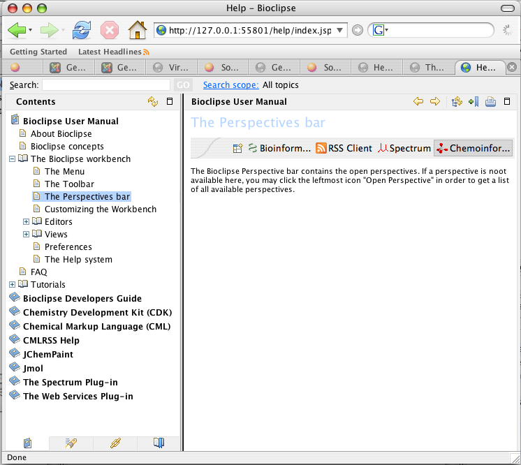

The Bioclipse Toolbar
The Help system lets you browse, search, bookmark, and print help documentation.
The documentation is organized into sets of information that are analogous to books.
The help system also supplies a text search capability for finding the information
you need by search phrase or keyword, and context-sensitive help for finding
information to describe the particular function you are working with.
The Help window
The Help window provides the same content as the Help view, but in a separate window
instead of in a view. You can open the window from the main menu by selecting
Help > Help Contents. The first view shown in the window is called Contents.
This view displays the table of contents for the product documentation. Click on
one of the links to expand the navigation tree for a set of documentation.
Navigate the Help window
1. Find the topic you want to read in the table of contents by clicking to expand the subtopics.
2. Most topics provide a list of links to related topics at the bottom. Follow these links to learn more.
3. Use the Go back Go Back and Go forward Go Forward buttons to navigate back and forth. These behave the same way as in Web browsers.
Maximizing help views
The different parts (views) of the Help window can be maximized to take up the entire window. To maximize a frame, click the Maximize button Maximize button in the toolbar, or double click on the view's title header. To return the view to its original size, click the Restore button Restore button or double click the title header again.
Printing help
To print a topic from the Help window:
1. Select the topic in the navigation frame.
2. Click the Print button Print button in the Help toolbar.
3. Select the desired printer settings, and click Print.
Image of the help window
